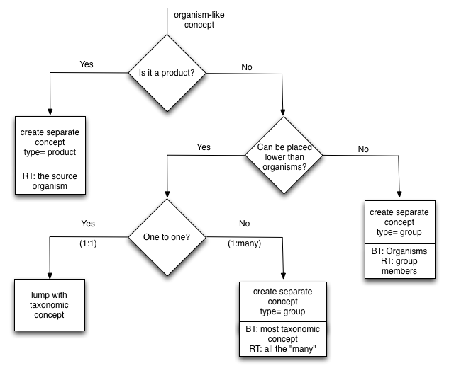

Scientific and common names of organisms
Concepts of type "organism" are 29% of GACS Beta 1.6. Of these, over 83% have a scientific name as prefLabel. The remaining 17% includes:
-
common names: goats, lizards, ducks, shrimps, honey bees, mangolds.
-
names of organism groups: young animals, plant parasitic nematodes, aquatic insects, small ruminants, farmed fish, macroinvertebrates, racing animals, rodents, pets, cash crops.
-
names of special kinds of organism: stallions, kids, weanlings, bitches, beef bulls, yearlings, ewes, ducklings, germ-free animals, herds, fish larvae.
The scientific names of organisms are markedly "translinguistic" -- i.e., they are often used unchanged across a broad range of world languages. Scientific names may be expressed as "Latinate" (Latin or Latin-like) phrases, such as "Tsuga canadensis" or "Picea engelmannii". Exceptions include viruses, which are translingually named in English, e.g., "Foot-and-mouth disease virus". If the goal of GACS were to provide a definitive database for species or taxons, it might follow relevant standards such as Darwin Core, which designates scientific names with a special property. In order to meet the simpler use cases of bibliographic indexing, GACS follows the thesaurus paradigm of concepts with preferred and alternate labels. Insofar as scientific names are translingual, they are considered in GACS as belonging to no language in particular. Labels with scientific names are tagged with a code, 'zxx', defined in ISO 639-2 and ISO 639-3 for content that is not specific to any language (@cite).
In GACS, the distinction between preferred and alternative labels is largely orthogonal to the distinction between scientific and common names. A scientific name may be the preferred label (e.g., "Leptinotarsa decemlineata") and the corresponding common name the alternative ("Colorado potato beetle"). Vice versa, the common name may be preferred ("dogs") and the scientific name alternative ("Canis lupus familiaris").

Examples
See Lori Finch note
----------------------------------------------------------------------------------------
| Condition | prefLabel | altLabel |
|------------------------------|---------------------------|---------------------------|
| 1:1 Common to Species Name | __Species__ | __Common__ |
| | Leptinotarsa decemlineata | Colorado potato beetle |
| | Camelus bactrianus | Bactrian camel |
| | Quercus rubra | Northern red oak |
| 1:N Common to Species Name | __Species__ | __Common__ |
| | Campanula | Bluebells |
| | Barleria | |
| | Mertensia | |
| | Eustoma | |
| | Hyacinthoides | |
----------------------------------------------------------------------------------------
Issues
- Possibly move common names with no relationship to scientific names away from Plantae (they make the hierarchy messy). AGROVOC and NALT are split between "plants (botany)" and "Plantae"; CABI lumps them.
- Cases where scientific name is transcribed into a non-Latin script.
- Including common and scientific names in a single hierarchy.
- Abbreviations.